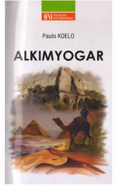

AO'z taqdirini va orzularini izlayotgan cho'pon bola haqidagi falsafiy roman.
Paulo Koeloning mashhur ushbu romani andalusiyalik Santyago ismli cho'pon bolaning o'z taqdirini izlab qilgan sarguzashtlari haqida hikoya qiladi. Asar o'quvchini hayotiy sinovlarni yengib o'tishga, o'z orzulari sari dadil borishga va olam qalbini tushunishga o'rgatadi.